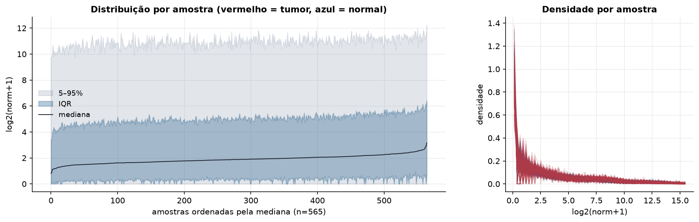
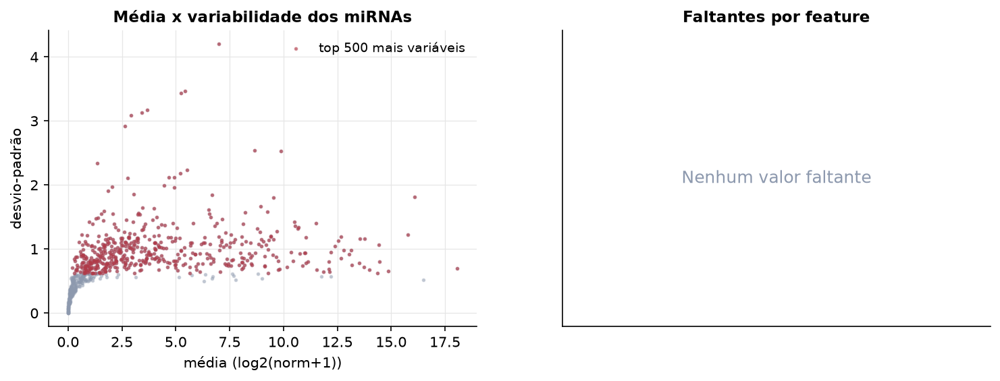
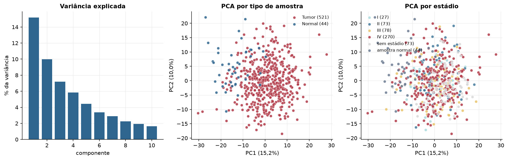
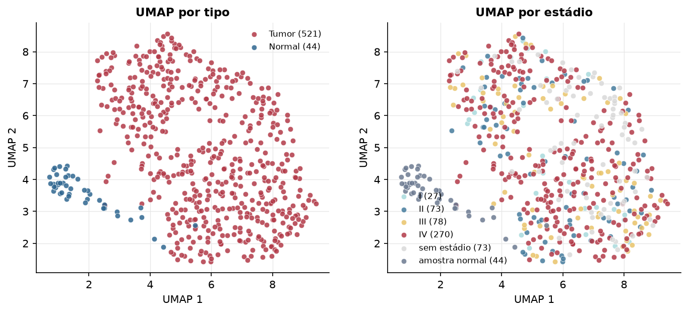
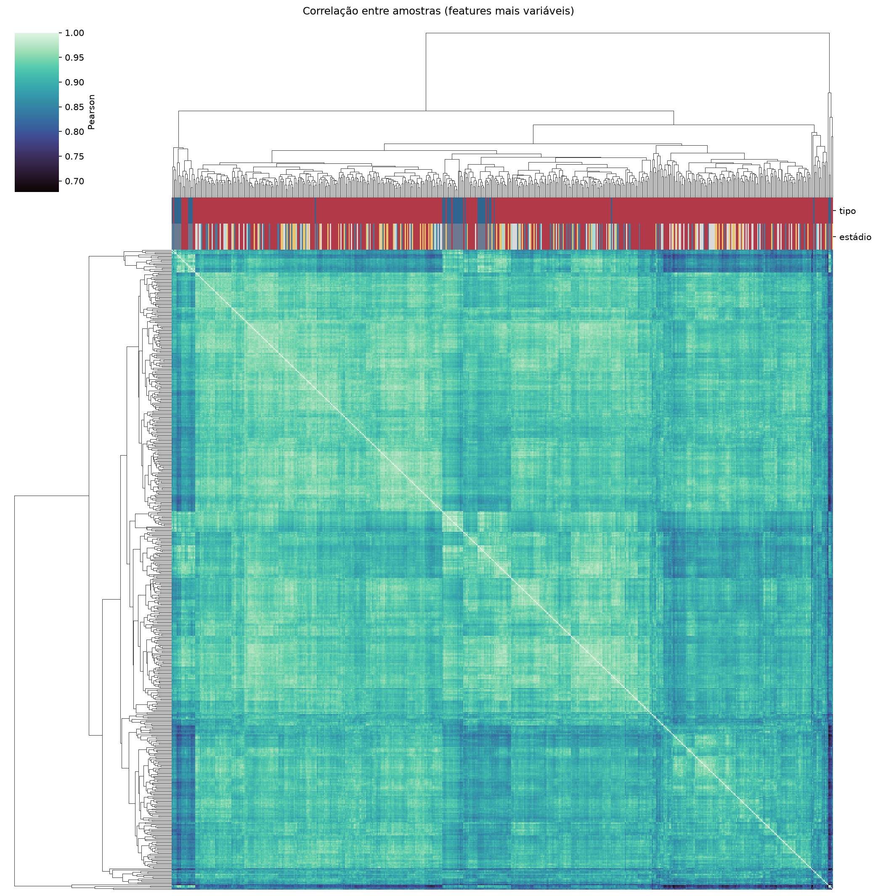
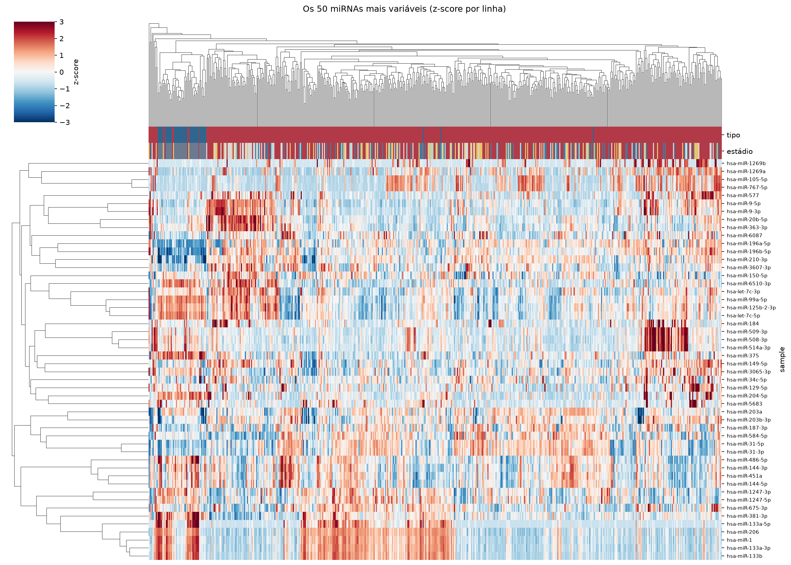
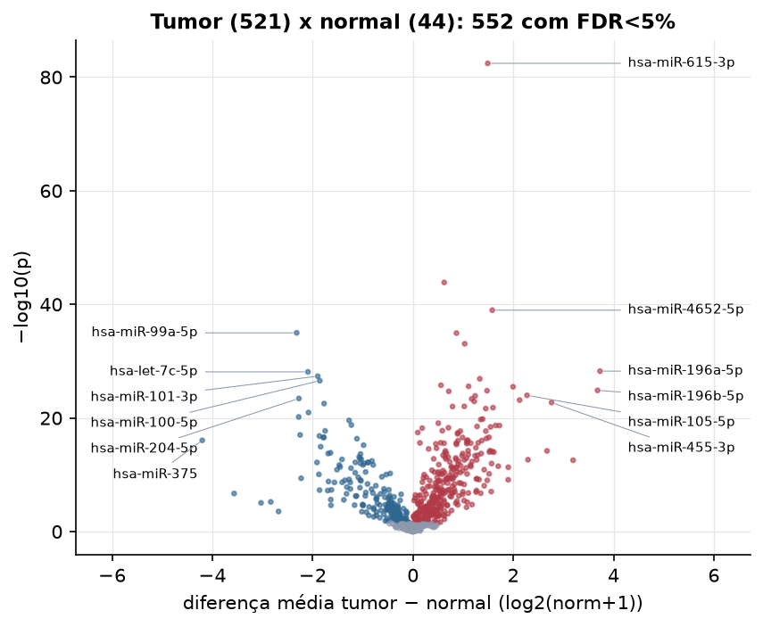
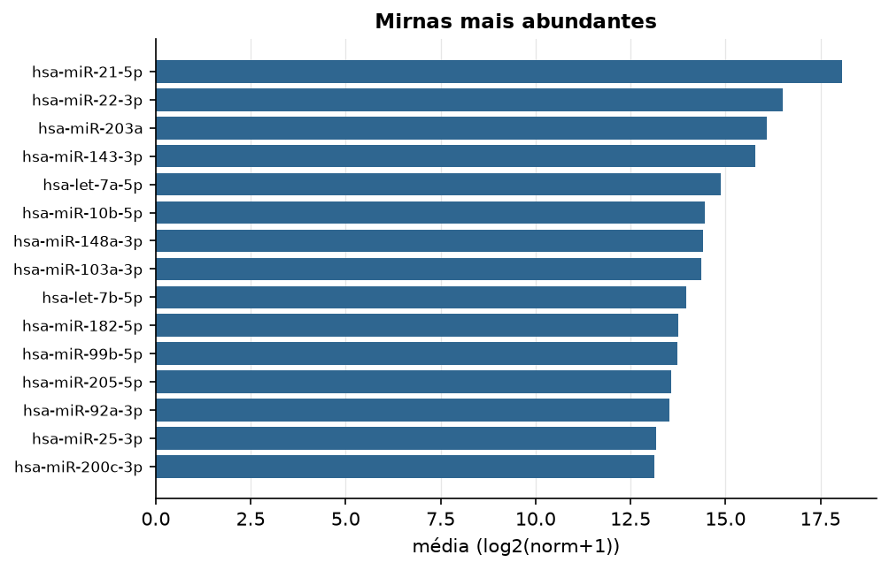

HNSC · miRNA-seq (PanCanAtlas)
miRNA maduro, normalizado e corrigido por lote (EB), log2(x+1) · gerado em 21/10/2026 21:53
743miRNAs
521amostras tumorais
44amostras normais
0,0%valores faltantes
Fonte: PanCanAtlas (pancanMiRs_EBadjOnProtocolPlatformWithoutRepsWithUnCorrectMiRs_08_04_16.xena)
Fita madura (5p/3p) já normalizada. As contagens brutas por precursor estão no relatório de contagens.
Principais resultados
- 743 miRNAs medidos em 565 amostras (521 tumorais e 44 normais); 0,0% dos valores estão faltando.
- Os dois primeiros componentes principais explicam 15,2% e 10,0% da variância das features mais variáveis.
- Correlação mediana entre amostras: 0,92.
- Amostras com correlação muito abaixo das demais (possíveis outliers técnicos): TCGA-CV-6939-11, TCGA-CV-7091-11, TCGA-CV-7429-01, TCGA-HD-A634-01, TCGA-D6-A6EP-01.
- Tumor x normal: 552 miRNAs diferentes com FDR < 5% (357 maiores no tumor, 195 maiores no normal; 43 pacientes têm o par tumor-normal).
- Mais aumentados no tumor: hsa-miR-615-3p, hsa-miR-548f-3p, hsa-miR-4652-5p, hsa-miR-503-3p, hsa-miR-365a-5p, hsa-miR-196a-5p, hsa-miR-130b-3p, hsa-miR-767-3p.
- Mais reduzidos no tumor: hsa-miR-99a-5p, hsa-let-7c-5p, hsa-miR-101-3p, hsa-miR-100-5p, hsa-miR-204-5p, hsa-miR-125b-2-3p, hsa-miR-29c-3p, hsa-miR-139-3p.
- Associações clínicas com p < 0,05 nos componentes principais: PC3 com sexo (p=0.041); PC2 com sobrevida (p=0.0014).
Distribuição dos valores


Estrutura das amostras




Tumor x normal

Features mais diferentes entre tumor e normal
| sample | diferenca_tumor_menos_normal | t | p | fdr |
|---|---|---|---|---|
| hsa-miR-615-3p | 1.491 | 28.436 | 3.69e-83 | 2.72e-80 |
| hsa-miR-548f-3p | 0.623 | 15.358 | 1.38e-44 | 5.07e-42 |
| hsa-miR-4652-5p | 1.581 | 19.682 | 1.05e-39 | 2.57e-37 |
| hsa-miR-99a-5p | -2.319 | -20.183 | 1.03e-35 | 1.69e-33 |
| hsa-miR-503-3p | 0.868 | 17.172 | 1.15e-35 | 1.69e-33 |
| hsa-miR-365a-5p | 1.032 | 17.739 | 8.56e-34 | 1.05e-31 |
| hsa-miR-196a-5p | 3.731 | 19.201 | 5.7e-29 | 6e-27 |
| hsa-let-7c-5p | -2.094 | -17.772 | 7.61e-29 | 7.01e-27 |
| hsa-miR-101-3p | -1.899 | -19.879 | 4.43e-28 | 3.63e-26 |
| hsa-miR-130b-3p | 1.332 | 17.369 | 1.27e-27 | 9.36e-26 |
| hsa-miR-100-5p | -1.857 | -17.688 | 2.72e-27 | 1.82e-25 |
| hsa-miR-767-3p | 0.558 | 11.392 | 1.74e-26 | 1.07e-24 |
| hsa-miR-877-5p | 1.109 | 15.793 | 2.65e-26 | 1.5e-24 |
| hsa-miR-503-5p | 1.997 | 17.641 | 3.21e-26 | 1.69e-24 |
| hsa-miR-196b-5p | 3.681 | 18.577 | 1.38e-25 | 6.78e-24 |
| hsa-miR-301a-5p | 1.477 | 15.517 | 1.58e-25 | 7.26e-24 |
| hsa-miR-301b | 0.715 | 13.73 | 2.02e-25 | 8.76e-24 |
| hsa-miR-105-5p | 2.274 | 12.021 | 1.03e-24 | 4.2e-23 |
| hsa-miR-4746-5p | 1.24 | 15.286 | 1.29e-24 | 5.01e-23 |
| hsa-miR-204-5p | -2.273 | -15.591 | 3.67e-24 | 1.35e-22 |
| hsa-miR-424-3p | 1.17 | 14.868 | 4.36e-24 | 1.53e-22 |
| hsa-miR-767-5p | 2.128 | 11.793 | 7.05e-24 | 2.36e-22 |
| hsa-miR-937-3p | 1.223 | 13.932 | 1.19e-23 | 3.83e-22 |
| hsa-miR-455-3p | 2.764 | 17.142 | 1.91e-23 | 5.86e-22 |
| hsa-miR-125b-2-3p | -1.772 | -14.131 | 2.92e-23 | 8.6e-22 |
| hsa-miR-18a-3p | 1.024 | 14.096 | 9e-23 | 2.55e-21 |
| hsa-miR-589-5p | 0.79 | 13.896 | 9.57e-23 | 2.61e-21 |
| hsa-miR-1301-3p | 1.596 | 16.156 | 1.51e-22 | 3.98e-21 |
| hsa-miR-93-3p | 1.452 | 15.097 | 2.2e-22 | 5.59e-21 |
| hsa-miR-29c-3p | -2.083 | -14.772 | 1.09e-21 | 2.68e-20 |
Associação com variáveis clínicas
p-valores da associação dos três primeiros componentes principais (só tumores) com estádio (Kruskal-Wallis), sexo (Mann-Whitney), idade (Spearman) e sobrevida global (Cox univariado).
| estádio (Kruskal) | sexo (Mann-Whitney) | idade (Spearman) | sobrevida OS (Cox) | |
|---|---|---|---|---|
| PC1 (13,8%) | 0.475 | 0.457 | 0.367 | 0.113 |
| PC2 (10,1%) | 0.334 | 0.273 | 0.28 | 0.001 |
| PC3 (7,5%) | 0.2 | 0.041 | 0.54 | 0.643 |
Mais abundantes
